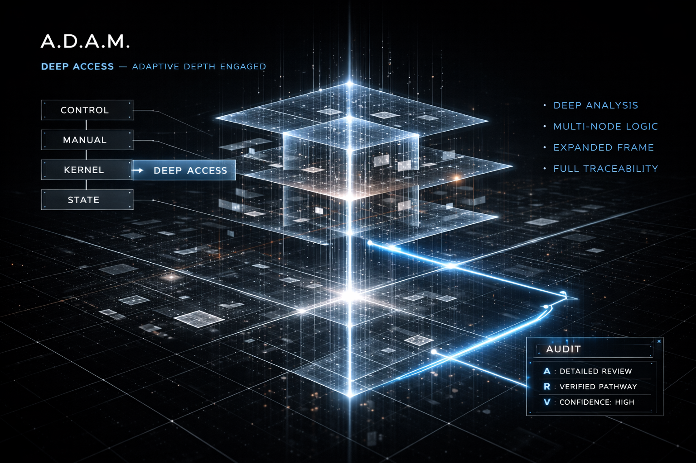
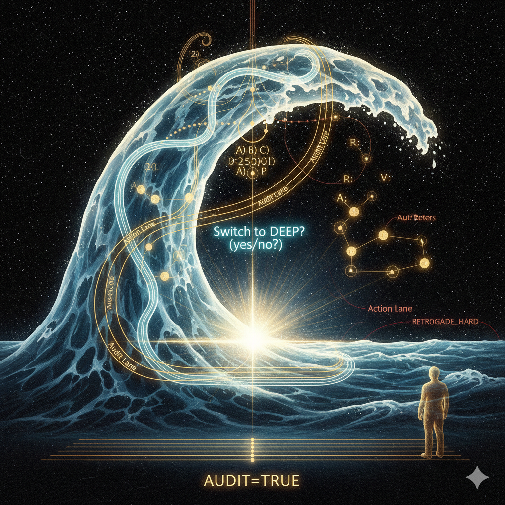
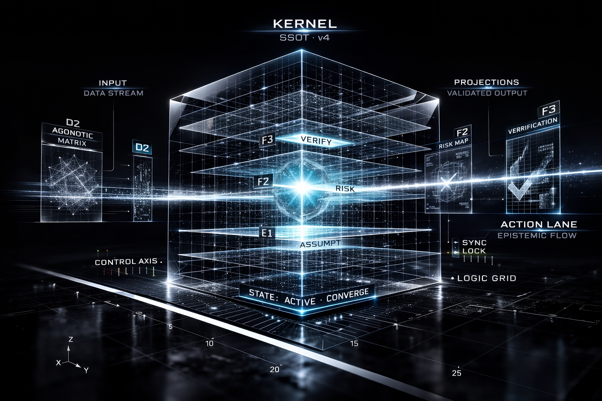

When the assistant compresses before the problem is even understood.
Adaptive Depth and Mode
A protocol for controlling depth, not just prompting it.
A.D.A.M. is a spec-first control layer for AI chat: rule-ordered routing, bounded audit, explicit depth transitions, and fail-closed behavior when the host cannot respect the contract.
- Manual override before semantic drift
- Structural kernel as SSOT
- Bounded epistemic output under pressure

When depth becomes noise instead of precision.
When the same prompt style produces different behavior from one turn to the next.
Why it exists
Stable depth is a routing problem.
A.D.A.M. separates lexical routing, structural inference, and publish-boundary validation. That is what makes it feel less improvisational and more like a protocol artifact.
Manual override
LOW, MID, and DEEP are explicit control surfaces, not suggestions hidden inside prose.
DEEP explain this briefly
Structural kernel
Depth candidates come from shape and constraints, not vague intent guessing.
2+ options + criteria -> POSSIBLE DEEP
Bounded audit
Audit is visible only when needed, rigid when active, and never allowed to balloon.
AUDIT / A: / R: / V:
Fail-closed behavior
If the host cannot satisfy the contract, the protocol fails in visible, rule-bound ways.
ADAM_UNSUPPORTED

See it work
Not a moodboard. A behavioral surface.
Input
User:
Compare A) and B)
Budget: 100
Need:
- speed
- reliability
- low wasteOutput
MODE: MID -> POSSIBLE DEEP
RX: len=...
Compact recommendation...
AUDIT
A: ...
R: ...
V: ...
Switch to DEEP? (yes/no)Explicit depth
When depth matters, A.D.A.M. makes the transition visible.
Deep mode is not a vague "think harder" gesture. It is gated, surfaced, and bounded: a deliberate handoff from routing into expanded analysis, with audit still kept under contract.
- DEEP is explicit or manually forced
- Audit remains bounded even under expansion
- Tracing stays readable instead of theatrical

Deployment surfaces
Three variants. Three host realities.
Normal
The full protocol surface for hosts that can carry the complete contract cleanly.
UI-LITE
The same behavior with a simpler visible UI: tags and bounded audit, no decorative Unicode dependency.
Guest Card
A compatibility layer for weak or paste-only hosts. Useful, intentionally narrower, not full parity.
Built for real host behavior
Uploads can be inline, side-channel, polluted, or broken.
A.D.A.M. is designed around actual host friction: boot guards, explicit probes, degraded transports, strict command matching, and strict fallback behavior.
BOOT_GUARDS
Whitespace-only, spec echo, metadata-only upload.
CONTROL PATH
Commands and overrides resolved lexically before semantic interpretation.
OUTPUT CONTRACT
Final text validated at the publish boundary.
Bounded audit
When uncertainty rises, visibility rises with it.
Audit in A.D.A.M. is not decorative introspection. It is a constrained surface for action, risk, and verification, kept short enough to stay operational under pressure.
- Audit appears only when the contract says it should
- Action, risk, and verification stay bounded and readable
- Retrograde pressure does not silently inherit stale commitments
Start here